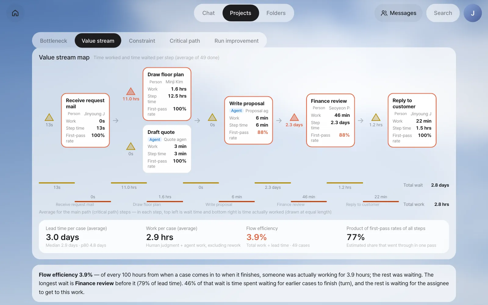
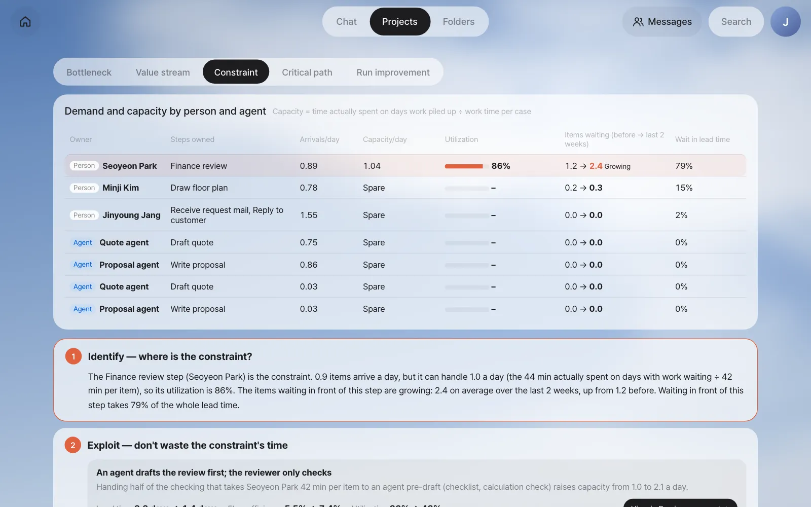
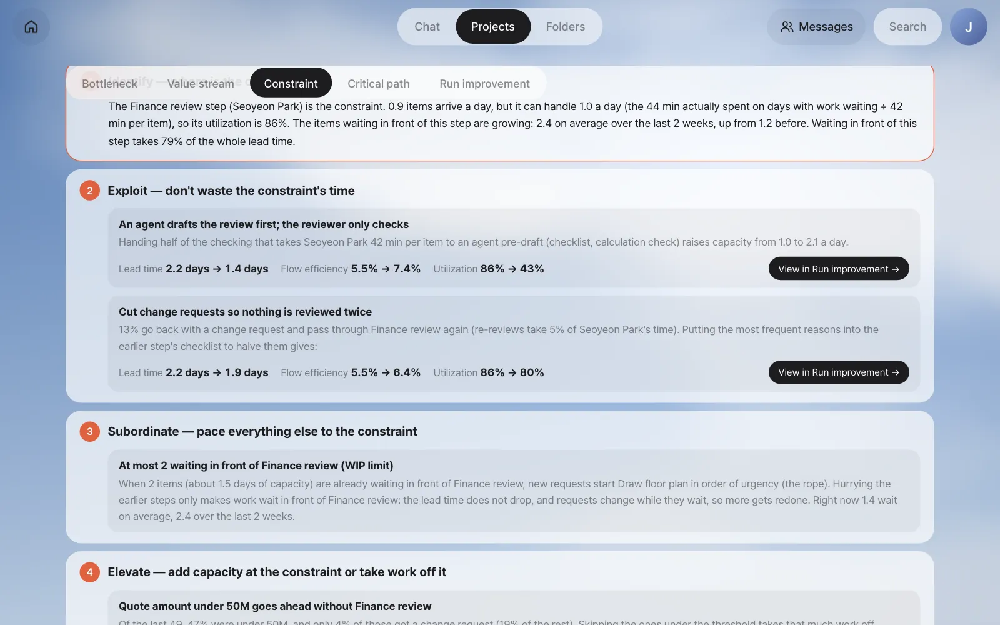
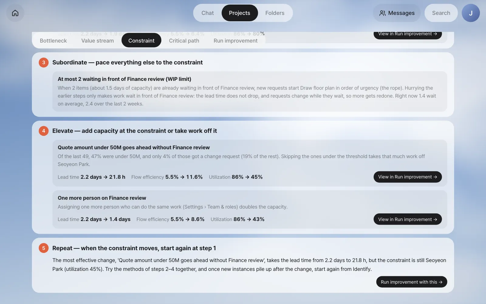

You'll measure flow efficiency with a value stream map, which puts the time worked and the time waited from a case's arrival to its finish on one page, and use the theory of constraints to find the one step that sets the overall speed. Then you'll fill in the theory of constraints' five focusing steps with this process's numbers.
Value stream — time working and time waiting#
In Chapter 20 you found that Finance review is the bottleneck. Now step back and look at the whole flow.
The value stream is every step it takes to produce the result the customer wants (here, a reply with the proposal and quote). Each step has two kinds of time.
| Time | Meaning | From the customer's view |
|---|---|---|
| Work time | The time a person or agent actually spends making an output | Time worth paying for |
| Wait time | The time the work sits on the next person's desk (or in their inbox) | Time that adds nothing |
A value stream map lays out the steps in order and notes, for each step, the work time, the wait before it, and the share done in one pass. It started in manufacturing, but it's especially useful in office work, where waiting is invisible.
Flow efficiency#
Flow efficiency is the share of the lead time spent actually working.
Flow efficiency = Σ work time ÷ lead time
For example, if a case's lead time is 3 days (72 hours) and all the time people and agents worked on it adds up to 3 hours, the flow efficiency is 3 ÷ 72 ≈ 4%. Office work is commonly said to have a flow efficiency of 5–15%. Low flow efficiency means cutting the waiting does more than working faster.
| Measure to read alongside | Meaning |
|---|---|
| First-pass rate | The share of cases that passed the step in one go (first-pass yield — not sent back with a change request) |
| Product of first-pass rates of all steps | An estimate of the chance a case goes from start to finish without ever going back |
| Step time | From reaching the step until it ends (wait + work) |
Try it 1 — The value stream map#
On the Improve screen, open the Value stream tab.

| Where to look | In this example |
|---|---|
| Boxes | The steps. Draw floor plan and Draft quote run at the same time, so they sit one above the other. An orange border marks the main path (Chapter 22) |
| Triangle before a box | The average wait before that step. The one before Finance review is the largest and reddest, at 2.3 days |
| First-pass rate | Write proposal and Finance review at 88% — about one case in eight gets a change request |
| Ladder | The wait (top) and work (bottom) of the main path steps. Total wait 2.8 days, total work 2.8 hours |
The totals at the bottom are what matter.
| Per case (average) | Value |
|---|---|
| Lead time | 3.0 days (median 2.9 days, p80 4.8 days) |
| Total work | 2.9 hours (human judgment + agent work, excluding rework) |
| Flow efficiency | 3.9% |
| Product of first-pass rates of all steps | 77% |
Waiting comes in two kinds too
The explanation under the map says that about half (46%) of the wait before Finance review is waiting in line: time spent waiting because Seoyeon Park hadn't yet finished other cases that reached her first. The rest is waiting for the owner: time spent waiting for the part of the day when Seoyeon Park does this work (a little over an hour in the morning). Waiting in line shrinks when less work piles up, but waiting for the owner only shrinks when the way of working changes. This split is used as is in the what-if calculation in Chapter 22.
The theory of constraints — a chain is only as strong as its weakest link#
The theory of constraints (TOC) is an idea put forward by Eliyahu Goldratt. When work runs through a chain of steps, the overall speed is set by the single slowest step (the constraint). However fast you make the other steps, more work just piles up in front of the constraint, and the whole doesn't get faster.
You look at three numbers to find the constraint.
| Number | Meaning | On this screen |
|---|---|---|
| Arrivals (demand) | How many items reach that person a day | The average number of arrivals per weekday |
| Capacity | How many of these items that person can finish a day | Time actually spent on days when work piled up ÷ work time per case |
| Utilization | Arrivals ÷ capacity | The closer to 100%, the riskier |
It matters that capacity is read from the records, not typed in by someone. Seoyeon Park doesn't do only finance reviews. So capacity isn't "8 hours a day ÷ 42 minutes per case." It's the time she actually spent on this work on days when work had piled up and she should have been working without a break (days when a case waiting at noon still hadn't started at 6 p.m.).
High utilization makes waiting explode#
Utilization and waiting don't move in a straight line. Queueing theory says waiting grows roughly in proportion to utilization ÷ (1 − utilization).
| Utilization | Utilization ÷ (1 − utilization) | Compared with 50% |
|---|---|---|
| 50% | 1 | 1× |
| 80% | 4 | 4× |
| 86% | 6.1 | 6× |
| 95% | 19 | 19× |
If just a little more work comes in, waiting multiplies. The other way around, lowering the constraint's utilization only a little cuts waiting a lot.
Try it 2 — Find the constraint#
Open the Constraint tab. The table at the top shows the demand and capacity of each person and agent.

| Owner | Steps owned | Arrivals/day | Capacity/day | Utilization | Items waiting (before → last 2 weeks) | Wait in lead time |
|---|---|---|---|---|---|---|
| Seoyeon Park | Finance review | 0.89 | 1.04 | 86% | 1.2 → 2.4 (Growing) | 79% |
| Minji Kim | Draw floor plan | 0.78 | Spare | – | 0.2 → 0.3 | 15% |
| Jinyoung Jang | Receive request mail, Reply to customer | 1.55 | Spare | – | 0.0 → 0.0 | 2% |
| Quote and proposal agents | Draft quote, Write proposal | 0.75 · 0.86 | Spare | – | 0 | 0% |
In our run the Quote agent and the Proposal agent each appear twice on the screen, the second time at 0.03 a day: the two cases run for real recorded the same agents under another name, so they are counted as separate rows.
"Spare" in the capacity column means there were hardly any days when work piled up, so capacity never hit its limit. Only Seoyeon Park has 86% utilization, and the items waiting in front of her have grown over the last 2 weeks. As requests increased in October, she came close to her capacity. The constraint is Finance review (Seoyeon Park).
Five focusing steps — identify → exploit → subordinate → elevate → repeat#
The theory of constraints sets the order for dealing with a constraint in five steps. At the bottom of the screen are the five steps filled in with this process's numbers. Effects attached to each action, like "lead time 2.2 days → 1.4 days," come from the what-if calculation in Chapter 22. Their starting point, 2.2 days, is the expected lead time of the critical path calculation there, not the measured average.

| Step | Meaning | In this process |
|---|---|---|
| 1. Identify | Decide where the constraint is | Finance review (Seoyeon Park). 0.9 arrivals a day, capacity 1.0, utilization 86%, and 79% of the lead time is the wait in front of it |
| 2. Exploit | Don't waste a moment of the constraint's time | ① An agent makes a review draft first (checking calculations and unit prices), and Seoyeon Park only checks: 2.2 days → 1.4 days ② Cut change requests so nothing is reviewed twice (13% go back; 5% of Seoyeon Park's time): 2.2 days → 1.9 days |
| 3. Subordinate | Pace everything else to the constraint | A limit of 2 waiting in front of Finance review (WIP limit — a cap on the amount of work in progress): when they pile up, new requests' Draw floor plan starts in order of urgency |
| 4. Elevate | Add capacity at the constraint or take work off it | ① Quotes under ₩50 million go ahead without Finance review: 2.2 days → 21.8 hours ② One more person on Finance review: 2.2 days → 1.4 days |
| 5. Repeat | When the constraint moves, go back to step 1 | Even with the most effective option, the constraint is still Seoyeon Park (utilization 45%) — use steps 2–4 together, and look again after the change |

A few points to note:
- Exploit comes before elevate. Before hiring more people (elevate), having the constraint you already have spend its time only on checking (exploit) is cheaper and faster. The agent pre-draft is exactly that.
- Subordinate (the WIP limit) doesn't shorten the lead time. It accepts that rushing upstream only means waiting in front of the constraint, and it reduces rework caused by requests changing while they wait. That's why it has no effect number.
- The case for skipping cases under the threshold is in the records. Of the last 49 cases, 47% were under ₩50 million, and their change-request rate was 4%, far lower than for those at or above it (19%). It means the finance review hardly changed the result for small cases.
- Repeat means opening this screen again. Once new instances pile up after the improvement, the constraint might move to Minji Kim (Draw floor plan).
It's the same flow as AI transformation (AX) consulting
Diagnosis (the breakdown in Chapter 20) → value stream (this chapter's map) → bottleneck (constraint) → agents and automation (pre-drafts, automation) → process redesign (applying the improvement in Chapter 22) is exactly the flow of an AI transformation consulting engagement. The last part, change management, is up to people — if you change a threshold, Finance and the proposal team have to agree on it.
Next#
The constraint is Finance review (Seoyeon Park), and you have improvement candidates from the five steps. In the next chapter you'll look at the chain of steps that sets the total duration (the critical path), calculate how much the lead time would drop before actually changing anything, and then apply the option you pick as a new version (Chapter 22).
Check your understanding
- A process has a lead time of 5 days (120 hours) per case and 6 hours of total work. What's its flow efficiency? Which affects the lead time more: halving the work or halving the waiting?
- Why does Minji Kim's capacity show as "Spare"? Does it mean she can do an unlimited amount in a day?
- The constraint is Seoyeon Park. If you automate Draw floor plan with an agent, what happens to the lead time? Explain with the theory of constraints.
Answer
- 6 ÷ 120 = 5%. Halving the work saves 3 hours; halving the waiting saves 57 hours. Cutting the waiting has a much bigger effect.
- Because there were hardly any days when work piled up (days when a case waiting at noon still hadn't started by evening), so there's no record of her capacity hitting its limit. It doesn't mean unlimited; it means "with today's demand, she has never been short."
- It drops a little (the floor plan is on the main path, so by those few hours), but not much. Even if the floor plan finishes sooner, the proposal still waits in front of Seoyeon Park. Improving a step that isn't the constraint only turns into more waiting in front of the constraint. You can check this yourself with the what-if calculation in Chapter 22.